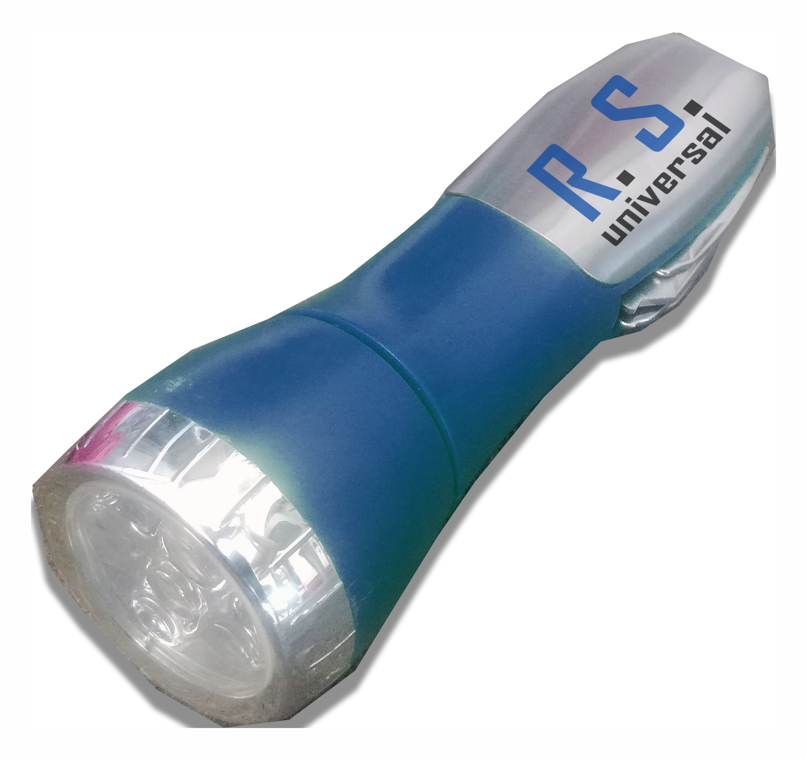
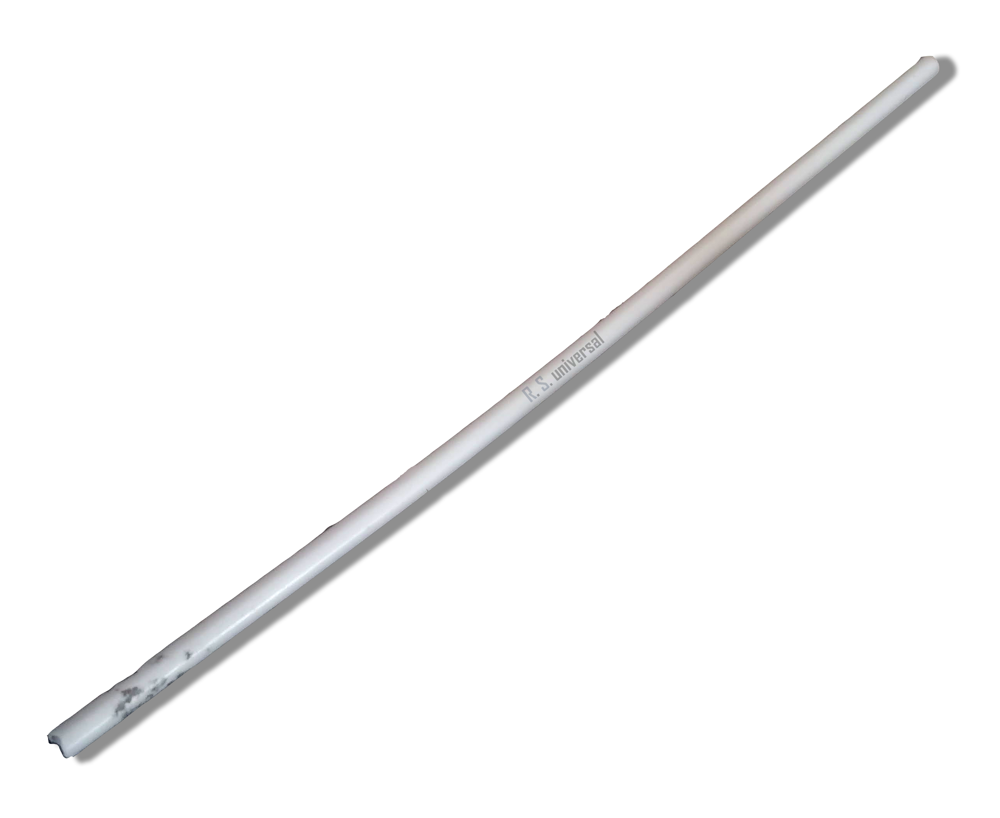
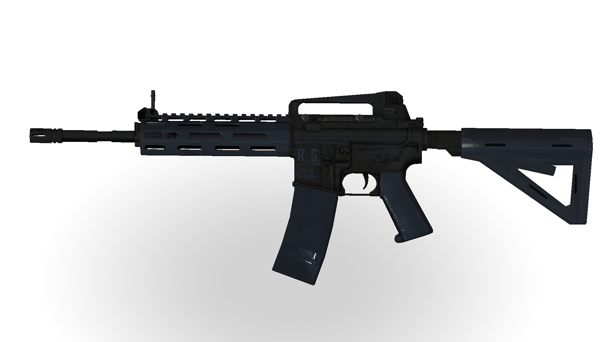
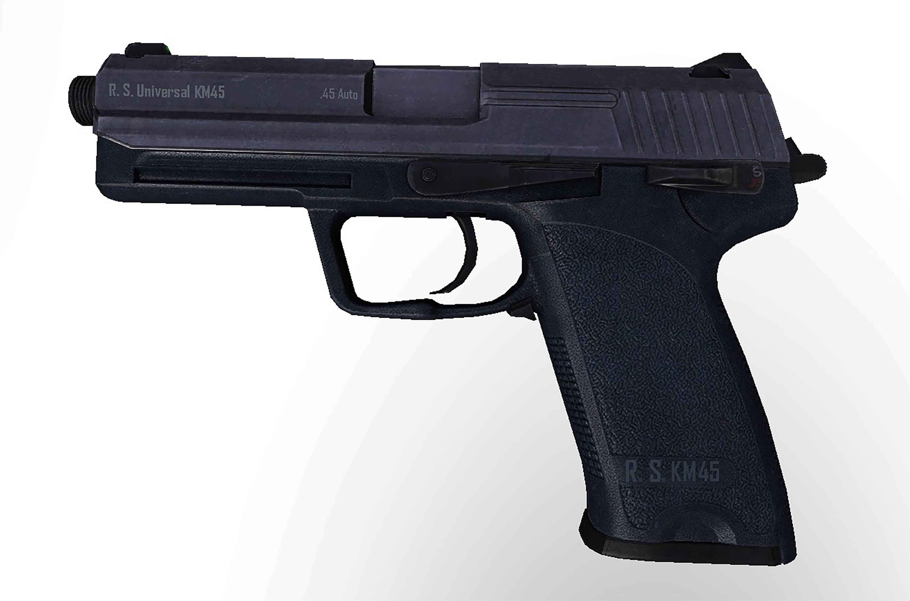

WEBOVÉ STRÁNKY R. S. Universal
Víteje v R. S. Universal, váš nejlepší obchod pro kutilské nástroje a střelné zbraně!. Z našich nástrojů si vybere každý kutil i střelec.
V R. S. Universal dbáme na to, aby jsme našim zákazníkum poskytli ty nejlepší služby. Ať už jste DIY kutil nebo milovník střelných zbraní, v R. S. Universal vám rádi poradíme a pomůžeme. Děkujeme, že jste navštívili náš web!
O nás
R. S. Universal je dceřinná společnost korporace L/S Industries - založena v roce 2019 jako jeho dceřinná společnost. Soustředí se na výrobu kvalitních kutilských nástrojů a střelných zbrání.
2024 edit:tohle bylo pro školní projekt který ten jsem dávno splnil ale firmu jsem zachoval, možná jsem ještě něco budu dávat :))
Podvejte se na naši reklamu pro univerzální tyč R.S. Unistick
zde!
Podívejte se na naše nové ukázky pro pušku RS-15 a pistoli KM!!
ukázka RS-15 -
Naše produkty

Svítilna R. S. Slashlight Mk. V

Univerzální plastová tyč R. S. Unistick Mk. II

Řada samonabíjecích pušek RS-15

Řada samonabíjecích pistolí KM
- Slashlight Mk. V je praktická, multifunkční svítilna s dosvitem až 400 metrů, 5 režimy svícení, fokusem a a zabudovaným švýcraským nožem. Vydrží opakované mlácení o zem i výbuch Semtexu.
- R. S. Unistick Mk. II je univerzální a modulární plastová tyč, to znamená, že je to nástroj, který má nekonečně mnoho využití a je užitečný na vše. Modulární je díky rozhraní "Modulární Nástrojový Systém", který byl pro tyčku námi vyvinut. Můžete ji využít například jako:
- nástroj pro sebeobranu
- ozdobu
- hůl
- palička na buben
- a tak dále....
- S pomocí příslušenství a doplňků, které můžete zakoupit u nás, si z ní můžete například udělat:
- kladívko/palici
- oštěp
- kliku na dveře
- improvizovanou střelnou zbraň (pokud je to u vás legální)
- koště
- svíltinu
- a mnohem více!
- R. S. Universal RS-15 je naše řada samonabíjecích pušek na bázi AR-15, používá předpažbí M-LOK a pažbu MOE, je dostupná v kalibrech 5.56x45mm NATO, 7.62x39mm Soviet, .300 AAC Blackout, .450 Bushmaster a 6.5mm Grendel. Je také dostupná v konfiguraci pistole ve stylu AR-15. Také lze u nás zakoupit klasické (oválové) předpažbí a pažbu. Horní rukojeť na obrázku je odnímatelná.
- R. S. Universal KM je řada samonabíjecích pistolí, která byla vytvořena na bázi původní pistole K&M .45 Tactical firmy Krowdley & Melson, která design a licenci prodala. R.S. Universal design a licenci pro tuto pistoli odkoupilo, design lehce upravilo pro větší modularitu a znovu uvedla do výroby. Pistole KM jsou dostupné v kalibrech 9mm Luger, .45 Auto, .380 Auto, 7.5mm FK, .40 S&W a .357 SIG. Je dostupná v mnoha konfiguracích, k dispozici jsou například kompaktní a taktické konfigurace.
Propagační a marketikgové materiály
Kontakt
Adresa: Česká Republika, Pačejov-nádraží, 341 01
Email: l4488547@gmail.com
adresa
Pačejov-Nádraží, U poplenic
L/S Digital, © 2024, Žádná práva jsem nevyhradil, ale mám je. Takže z této stránky nic nekrást!!